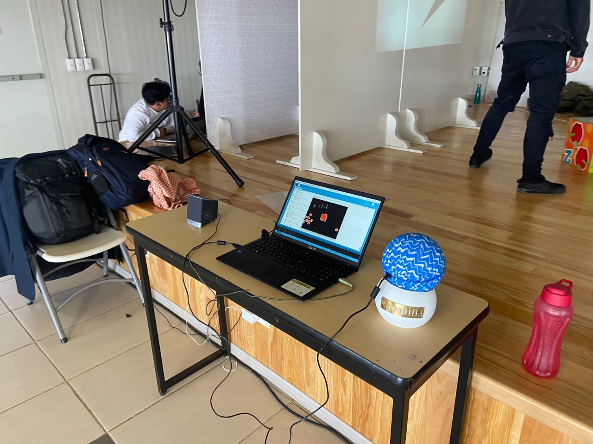
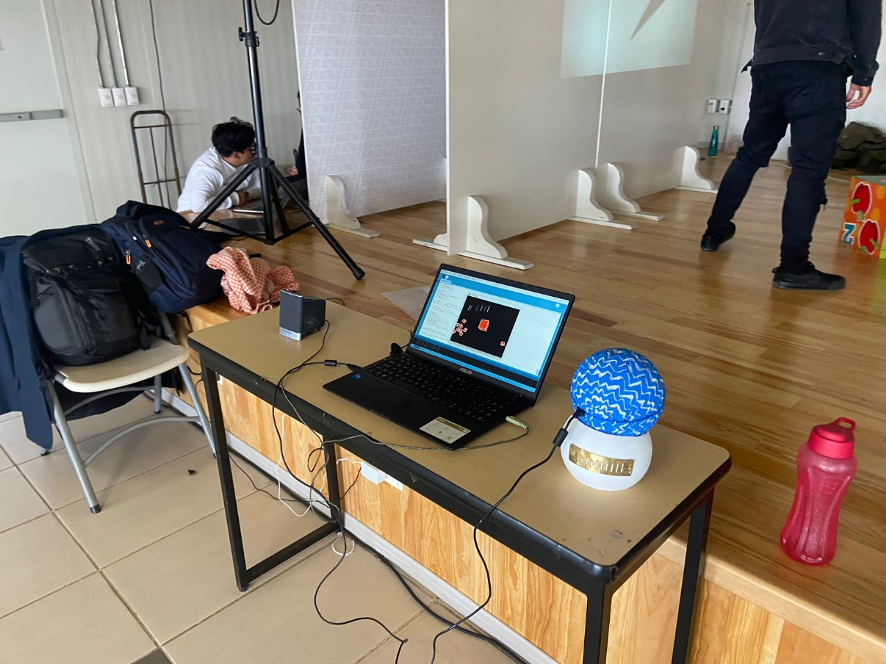

Arpa digital
Descripción
Arpa Digital es un proyecto interactivo que utiliza una esfera texturizada y un sensor giroscópico. Al girar la esfera, se generan melodías de armónica junto con una animación visual que metaforiza el instrumento. La armónica diatónica, con su historia desde hace miles de años hasta su influencia en el blues, jazz y folklore, destaca por la conexión física, mental y emocional entre intérprete e instrumento. El objetivo de la obra es que el espectador experimente cómo es tocar la armónica y aprecie sus características únicas, demostrando su versatilidad para cualquier género musical.
Ficha Técnica
Fecha: Oct 2023
Referente: "Nervous system" David Rokeby
Trabajo: Programación Arduino y Processing, diseño de artefacto, edición y grabación audio
Modo de producción: Individual
 
